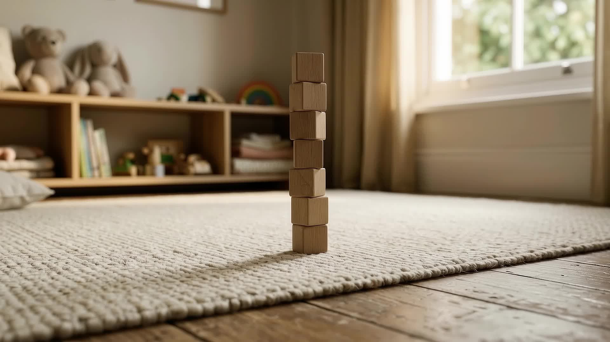

Çocuklar dünyayı oyunla öğrenir: denerler, yanılırlar, yeniden kurarlar. Bir kulenin yıkılması, bir harfin ters yazılması, bir becerinin bir süre gecikmesi çoğu zaman gelişimin doğal parçasıdır; bazen de desteklenmesi gereken bir alana işaret eder. Gelişimsel değerlendirmede çocuğunuzun güçlü yanlarını ve ihtiyaçlarını birlikte görür, okula ve yeni dönemlere hazırlığı adım adım planlarız. İlk görüşmeyi çocuğunuz olmadan, sizinle yapabiliriz.
Ön görüşme için randevu alBu bölümün metni uzmanla birlikte yazılacak.
Bu bölümün metni uzmanla birlikte yazılacak.
Bu bölümün metni uzmanla birlikte yazılacak.